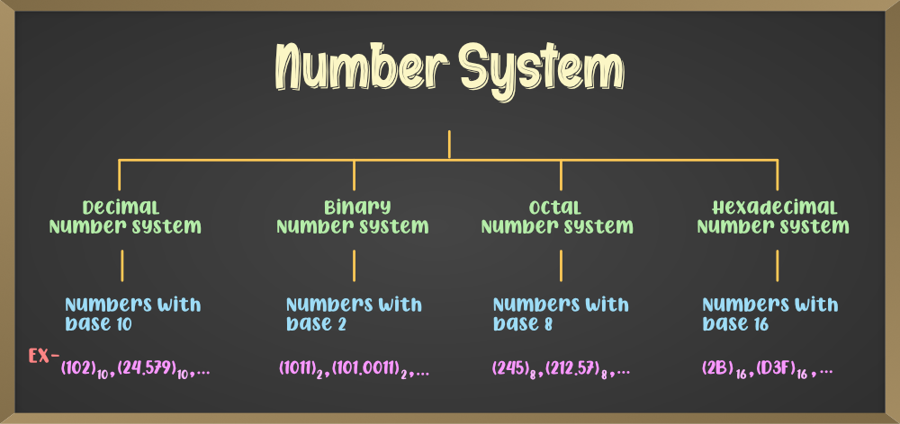
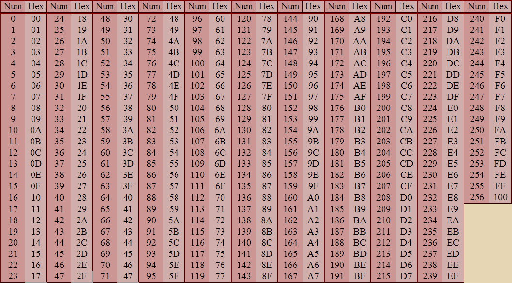

Master Digital Number Systems
Learn how computers represent and manipulate numbers using different bases

Common Number Systems
Binary (Base-2)
Uses only two digits: 0 and 1. Fundamental to all digital systems and computer architecture.
Example: 10102 = 1010
Decimal (Base-10)
The standard system using digits 0-9. Used in everyday counting and mathematics.
Example: 4210
Octal (Base-8)
Uses digits 0-7. Historically important in computing systems.
Example: 528 = 4210
Hexadecimal (Base-16)
Uses digits 0-9 and letters A-F. Compact representation of binary data.
Example: 2A16 = 4210
Conversion Methods
Division Method
Expansion Method
Shortcut Methods

To convert from decimal to another base, repeatedly divide the number by the target base and record the remainders in reverse order.
Convert 42 to binary:
42 ÷ 2 = 21 remainder 0
21 ÷ 2 = 10 remainder 1
10 ÷ 2 = 5 remainder 0
5 ÷ 2 = 2 remainder 1
2 ÷ 2 = 1 remainder 0
1 ÷ 2 = 0 remainder 1
Read remainders upwards: 101010
To convert from any base to decimal, multiply each digit by its positional value (base^position) and sum the results.
Convert 2A16 to decimal:
2 × 161 = 32
A (10) × 160 = 10
32 + 10 = 4210

Special relationships between binary, octal, and hexadecimal allow quick conversions:
- 1 hexadecimal digit = 4 binary digits
- 1 octal digit = 3 binary digits